<lang>Cree</lang><br><ldata>Algonquian - Canada</ldata> <iframe data-autoplay width="840" height="500" src="http://www.youtube.com/embed/3p6Zc9mc9wA"></iframe> Cree Nation Artists - "N'WE JINAN" --- ### Administrative Notes * Sam Beer is teaching LING 2000 (Intro to Linguistics) in the Spring * This is a great next step in Linguistics * Will is teaching LING 3100 (Language Sound Structures) in the Spring * If you've already taken 2000, consider this! * **Skype office hours are now by appointment only!** * Just email to set something up. Same-day is very likely! --- # Languages of North America ### LING 1020 - Will Styler --- ### Today's agenda * Linguistic diversity in North America * Three Awesome Native American Language Families * Why Navajo made a great code in WWII/Korea. --- ### So, there's kind of a pattern in World Languages --- <img class="big" src="lotwimg/americadiversitymap.png"> --- --- 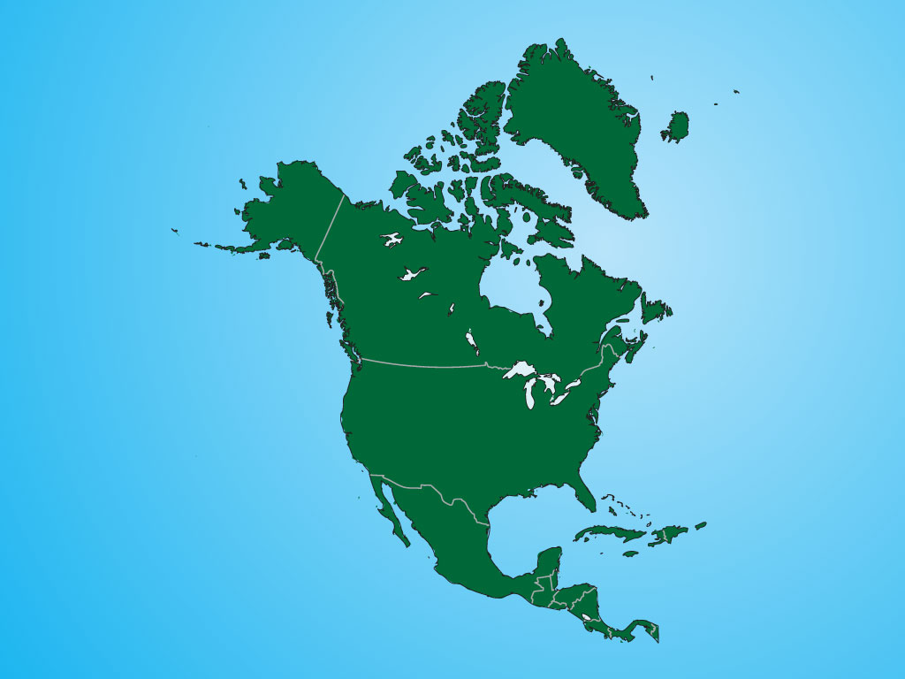 --- 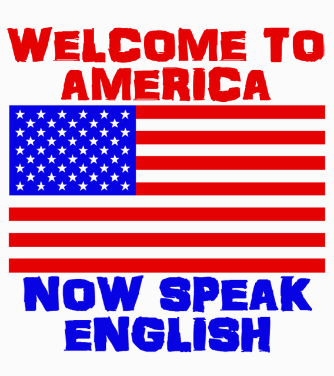 --- ### We saw this in the Caucasus * Then China * Then Africa * Then Australia * Now for the saddest example --- ### North America was a linguistically diverse place! --- <img class="big" src="lotwimg/americadiversitymap.png"> --- ### North American Indigenous Languages! * Approximately 296 languages spoken above Mexico before colonialism * (That we know of) * These broke down into ~50 families --- ### Indigenous Language Families 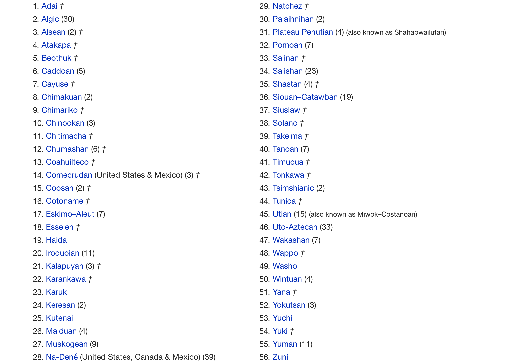 --- ### *Currently surviving* Indigenous Language Families 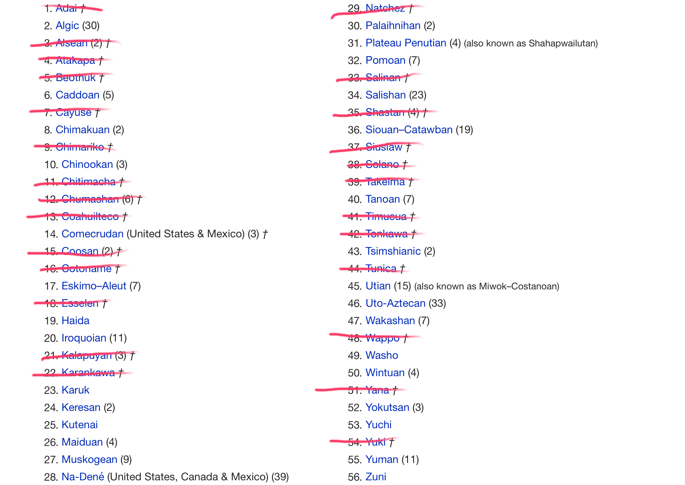 --- ### We don't have time to talk about all of them * I'll talk about a few families today * Dr. Rood will talk about one on Monday * Jesus will talk about Mexican Indigenous Languages on 11/17 * You'll take "Native American Languages" next time it rolls around --- ### North American Language Families (That we're going to discuss today!) * Siouan Languages * Algonquian Languages * Athabaskan/Na-Dené Languages --- ## Siouan Languages --- 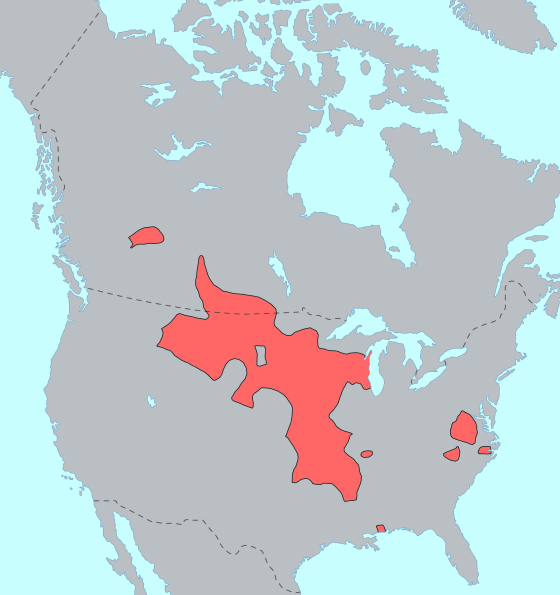 --- ### Siouan * Also called "Siouxan" or "Catawban" or "Siouan-Catawban" * Contained 20 languages * Now contains 11 languages --- ### Well-known Siouan Languages * Dakota - 18,000 speakers * Lakota - 6000 speakers * This is the language used in "Dances with Wolves" * Assiniboine/Nakota - 150 speakers * Crow - 3000 speakers * Osage - 10 speakers * Hidatsa - 10 speakers --- ### Dakota, Nakota and Lakota are often just considered "Sioux" * Together, they're the fifth most widely spoken NA language * They've got fun history! --- 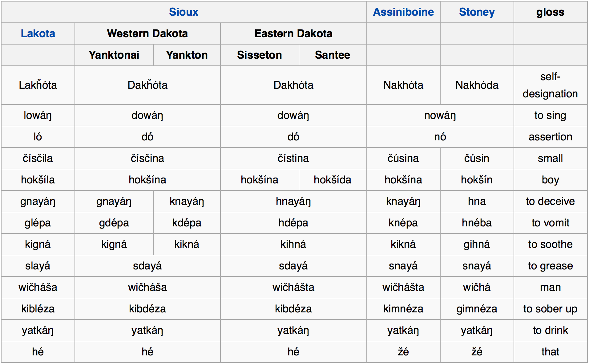 --- <lang>Lakota</lang><br><ldata>Siouxan - Great Plains</ldata> 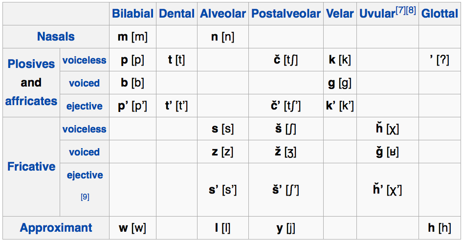 --- <section data-background="img/clickerbkgrnd.png"></section> ### What other language group has weak or no voicing contrasts? A) Dravidian B) Australian Languages C) Austronesian D) Tai-Kadai --- <section data-background="img/clickerbkgrnd.png"></section> ### What other language group has weak or no voicing contrasts? A) Dravidian <correct>B) Australian Languages</correct> C) Austronesian D) Tai-Kadai --- <lang>Lakota</lang><br><ldata>Siouxan - Great Plains</ldata> <iframe data-autoplay width="840" height="500" src="http://www.youtube.com/embed/g-p4A4NcN6Q"></iframe> --- ### /txõka/ - Lakota for "big" 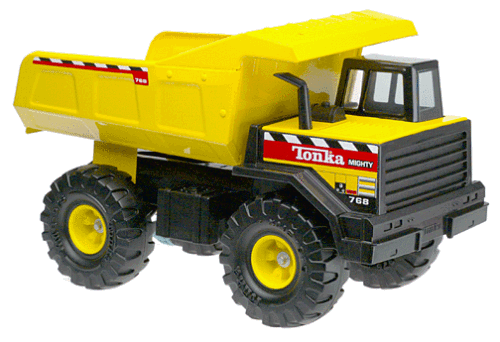 --- ### /tipi/ - Lakota for "house" 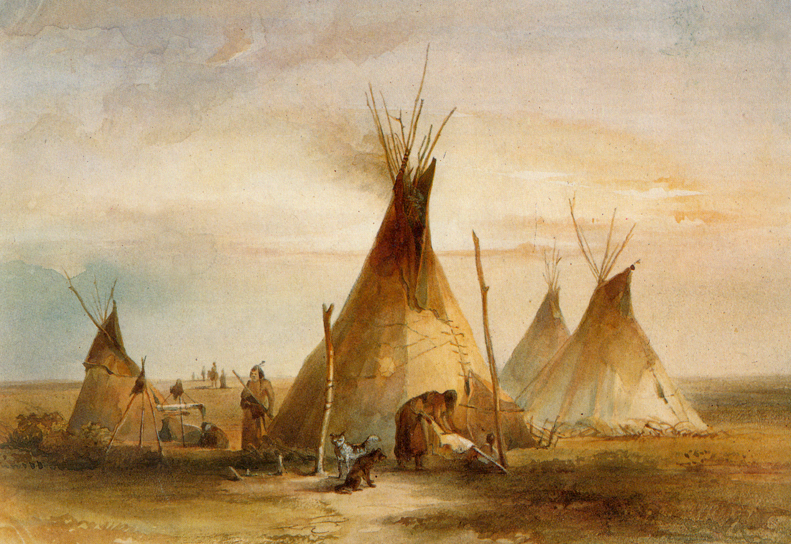 --- ### There are other loanwords, but we don't have time for them all. * So Sioux me! --- <img class="big" src="humorimg/badpundog.jpg"> --- ## Algonquian Languages --- 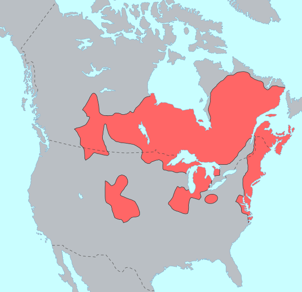 --- ### Algonquian * Part of "Algic" which also has Yurok and Wiyot * Around 30 languages * 15 have survived --- ### Prominent Algonquian Languages * Cree - 117,000 speakers (US and Canada) * Ojibwe - ~25,000 speakers * Blackfoot - ~3,200 speakers * Cheyenne - ~2,000 speakers * Arapaho - ~1,000 speakers * Massachusett (Extinct) --- ### Algonquian Languages are *Polysynthetic* --- ### Polysynthetic Languages Languages which are highly synthetic, incorporating more than one noun into a single word * Monday, Dr. Rood is going to present in Wichita, which is powerfully polysynthetic --- <lang>Ojibwe</lang><br><ldata>Algonquian - Great Lakes Region</ldata> <iframe data-autoplay width="840" height="500" src="http://www.youtube.com/embed/qCYf6cYR_es"></iframe> --- ### Arapaho is the language native to the Boulder Area * [Find out more online!](http://www.colorado.edu/csilw/arapahoproject/contemporary/maincontemp.htm) --- <lang>Arapaho</lang><br><ldata>Algoniuan - Colorado</ldata> <audio data-autoplay src="lotwimg/arapaho_ducks.mp3"></audio> 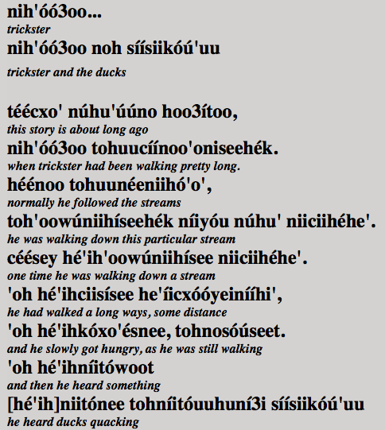 --- ### Algonquian Loanwords * Chipmunk * Husky * Moose * Opossum * Skunk * Toboggan * Hickory --- ## 'Woodchuck' is a borrowing * From Naragansett *ockqutchaun* --- ### That means woodchucks never chucked wood <img class="big" src="humorimg/conspiracykeanu.jpg"> <!-- .element: class="fragment" --> --- ## Na-Dené Languages --- 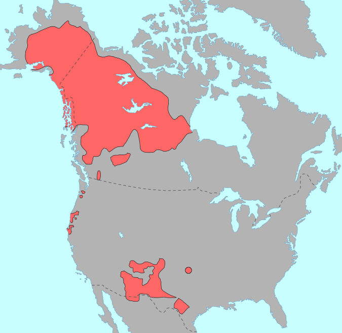 --- ### Na-Dené Languages * Includes Tlingit (spoken in Canada and Alaska) and Athabaskan * 32 "Northern Athabaskan" Languages (spoken in Canada and Alaska) * ~4000 speakers * 7 "Coastal Athabaskan" Languages (in California and Oregon) * 5 are extinct, the other two have 8 speakers total. * 6 "Southern Athabaskan" Languages (in the American West and Southwest) * 3 are extinct, ~175,000 speakers (!!) * Has a proposed (and widely liked) link to the Yenisean Languages of Siberia --- ### Prominent Na-Dené Languages * Navajo - ~170,000 speakers * Apache - ~14,000 speakers * Jicarilla - ~300 speakers --- ### Let's focus on Navajo --- ### Spoken in the 4 corners region 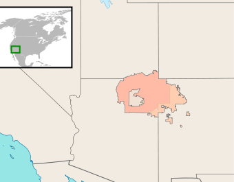 --- ### In WWI, WWII, Korea and Vietnam, radio encryption was not a thing * This meant that anything you said into a radio, Hitler heard. * **One solution: Use a language the enemies can't understand!** --- ### Code Talkers * Speakers of obscure languages who speak their language as "code" during war to communicate * Choctaw, Cherokee, Comanche, Seminole, Navajo, and Basque were all used this way * Code words were used ("Turtle" for "tank", "Gah" ("rabbit") for R) to further complicate things! * The movie "Windtalkers" is about these soldiers * Let's talk about Navajo --- <danger>What features would you want a language to have if you wanted it to be difficult for an outsider to understand?</danger> --- ## Why Navajo is a great code-talking language --- ### Lots of speakers! * This means lots of people to ship overseas --- ### Centrally located in the US * If the Japanese took California, speakers are safe --- ### No close relatives spoken overseas * Polish is a really bad code language in a war against the Russians... --- ### Unusual Consonants! 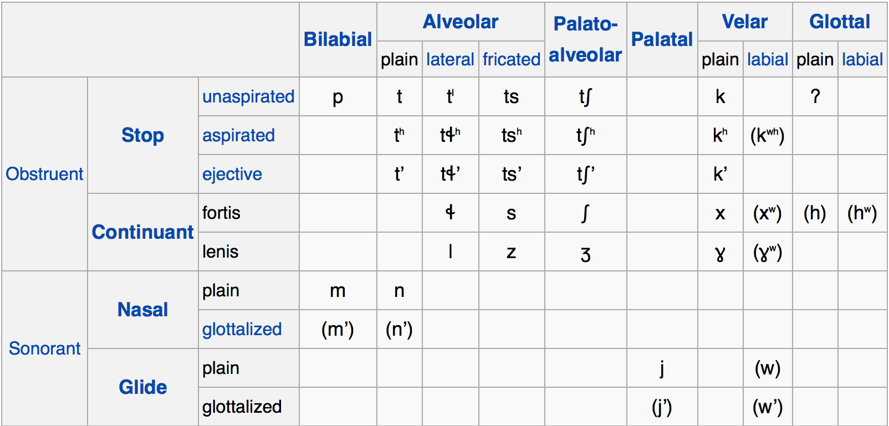 --- ### Suprasegmentals * Vowel Length * Vowel Nasality * Tone (High vs. Low) --- ### Complex *Modality* --- ### Modality Marks the "reality" or nature of the action --- ### Navajo Modality * Markers for if a verb's action is Incomplete * ... or Complete * ... or Typical * ... or in progress * ... or in the future * ... or possible/desired --- ### Complex *Aspect* --- ### Aspect Marks the nature of the temporal boundaries and progress of an action * *Mode and aspect can blend together, and it's not always easy to distinguish them* --- ### Navajo Aspect * Mark whether the action is happening at a specific moment * ... or just generally happening * ... or ongoing for a while yet * ... or recently completed * ... or happening repeatedly * ... or temporally different from the last one --- ### Navajo Aspect (continued!) * ... or over a few different targets/locations * ... or involves an abrupt change in direction * ... or involves a change in form * ... or requires motion in a straight line * ... or just occurs sporadically, here and there --- ### Noun class and classifiers which attach to verbs * -ʼą́ – Solid Roundish Objects * -yį́ – Load, Pack, Burden * -ł-jool – Non-Compact Matter * -lá – Slender Flexible Object * -tą́ – Slender Stiff Object * -ł-tsooz – Flat Flexible Object * -tłééʼ – Mushy Matter * -nil – Plural Objects 1 * -jaaʼ – Plural Objects 2 * -ką́ – Open Container * -ł-tį́ – Animate Object * **Often, you *don't need to mention the noun again!*** --- ### Strongly synthetic morphology * Lots and lots of affixes * It's very agglutinating * Lots of affixes pile up on verbs * It's also kind of fusional * Phonological rules cause these suffixes to blend together * So *only experienced speakers can pick the many affixes apart!* --- ### So you have a language where... * Many of the consonants are unusual * Words are heavily modified by suprasegmentals * Verb meaning is really complex * Nouns aren't usually necessary after the first mention * All of this is accomplished in an unparsable affix-pile. --- <lang>Navajo</lang><br><ldata>Na-Dené - SW United States</ldata> <iframe data-autoplay width="840" height="500" src="http://www.youtube.com/embed/XFayFUiyv20?start=20"></iframe> --- > At the Battle of Iwo Jima, Major Howard Connor, 5th Marine Division signal officer, had six Navajo code talkers working around the clock during the first two days of the battle. These six sent and received over 800 messages, all without error. Connor later stated, "Were it not for the Navajos, the Marines would never have taken Iwo Jima." --- From 1879 to 1938, the US Government forcibly sent Native American kids to boarding schools where children were beaten for speaking their native Language. * ... and the last of these schools closed in ***1984*** --- ### Remember all those extinct language families? --- --- ### Remember all those extinct language families? Our government fought hard to make that happen --- ### This isn't so distant --- ### Nichols Hall 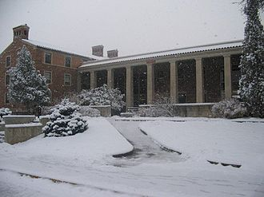 --- ### David H. Nichols > ... was called upon by Territorial Governor John Evans in 1864 to suppress Indian uprisings. In his capacity as Captain of Company D, Nichols participated in the infamous Sand Creek Massacre on November 29, 1864. * Cheyenne-Arapaho hall was named "Nichols Hall" in his honor in ***1961*** --- ### Cheyenne Arapaho Hall --- ### Linguistic Diversity is important * ... and there are always racist ***holes who want to destroy it --- ### On a lighter note... --- <lang>Navajo</lang><br><ldata>Na-Dené - SW United States</ldata> <iframe data-autoplay width="840" height="500" src="http://www.youtube.com/embed/QzyphgquAFU"></iframe> --- ### Wrapping Up * North America *had* lots of linguistic diversity * We still have some linguistic diversity * Despite our government's best efforts... * Navajo is incredible * You should take "Native American Languages" here --- ## In Recitation: Every other placename in this country is Native American * <danger>HW5 is due!</danger> --- ## Next time: Wichita is an incredible language with Dr. David Rood <correct>No reading.</correct> --- <huge>Thank you!</huge> ---